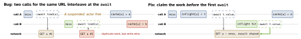

swift · folio
In one line: An actor is a reference type whose mutable state is guarded by a
serial executor: one task at a time runs its isolated code, outsiders
await. It is reentrant — at every await inside it
other calls may run, so a check made before a suspension can be stale after.
@MainActor is one global actor on the main thread: everything there
is serialised with the UI.
Download PDF Print view LaTeX source


Between two awaits an actor
method is atomic. Across one, assume anything in the actor changed. Swift
chose reentrancy to rule out deadlocks (an actor awaiting a call back into itself);
the price is interleaving.
How it works
- Actor: reference type, no inheritance, always
Sendable. Inside: synchronous access toself. Outside:awaiteven for a sync method (a possible hop). Arguments and results crossing the boundary must beSendable(orsending). - Executor: a default actor is a serial executor whose jobs run on the cooperative pool — not a thread of its own.
@MainActor’s executor is the main thread. Blocking inside an actor (semaphore, sync I/O) starves the pool. - Global actor:
@globalActor actor DB { static let shared = DB() };@DBon types/functions puts many declarations in one domain.MainActoris one. - Custom executor (SE-0392, 5.9):
nonisolated var unownedExecutor: UnownedSerialExecutor. Back an actor with aDispatchSerialQueue(iOS 17) to share a queue with a delegate API (AVCaptureSession); in its callbacks useassumeIsolated {}(traps if wrong) —preconditionIsolated()/assertIsolated()to check. nonisolatedmember: outside the domain, sees onlyletSendable state; needed for sync protocol requirements (Hashable,description).isolatedparameter:func f(_ b: isolated Bank)runs onb’s executor, touching its state synchronously.#isolation(SE-0420):isolation: isolated (any Actor)? = #isolation= “run on my caller’s actor” — a generic async helper that never hops, so non-Sendable closures are fine.@unchecked Sendableis acceptable only when you synchronise every access (lock,Mutex, serial queue) or wrap a type documented thread-safe — state the invariant in a comment, run TSan.Mutex<State>(Synchronization, iOS 18(unverified)):~Copyable,Sendable;withLock { $0 …}is synchronous, so the lock can never be held across anawait. Afinal classwithlet m = Mutex(…)is plainSendable— no@unchecked.
Why not always @MainActor?
@MainActor | own actor | Mutex | |
|---|---|---|---|
| runs on | main thread | coop. pool, serial | caller’s thread |
| access | sync on main, else await | await | sync, blocks briefly |
across await | reentrant | reentrant | impossible |
| parallel? | no — shares UI budget | vs other actors: yes | — |
| use for | UI state, view models | cache + network, DB | tiny sections, sync APIs |
Other reentrancy fixes
- Mutate before suspending (reserve, then
await). - Re-check state after every
await; never carry a local copy of actor state across one. - Move the invariant into a synchronous actor method.
Example — dedupe via the in-flight Task
actor ImageLoader {
private var cache: [URL: Data] = [:]
private var inFlight: [URL: Task<Data, any Error>] = [:]
func data(for u: URL) async throws -> Data {
if let hit = cache[u] { return hit }
if let t = inFlight[u] { return try await t.value } // join
let t = Task { try await URLSession.shared.data(from: u).0 }
inFlight[u] = t // claimed BEFORE any await
defer { inFlight[u] = nil }
let d = try await t.value // others may run here
cache[u] = d // still correct after re-entry
return d
}
}
func pay(_ n: Int, from b: isolated Bank) { b.balance -= n }
import Synchronization
final class Metrics: Sendable { // no @unchecked needed
private let hits = Mutex<[String: Int]>([:])
func record(_ k: String) {
hits.withLock { $0[k, default: 0] += 1 } }
}
actor Camera { // shares the capture queue
let queue = DispatchSerialQueue(label: "camera")
nonisolated var unownedExecutor: UnownedSerialExecutor {
queue.asUnownedSerialExecutor() }
}Traps
- “Actors make it thread-safe” — they remove data races, not logic races — reentrancy reorders state between awaits.
- Sync callers (delegate callback,
description) cannotawaitan actor:Mutex, orassumeIsolatedon the right executor. - Waiting on actor work with a semaphore from the pool can deadlock: never block in async code.
- Everything on
@MainActor= no parallelism and hangs; one actor per resource, not one per screen.
Remember
“An actor is a lock that lets go at every await.”